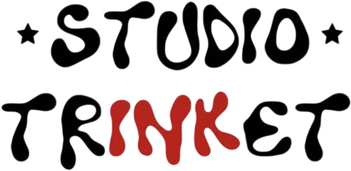

Studio Trinket, Bristol
34 St Nicholas Street, Bristol BS1 1TGI tattoo from Studio Trinket, a private studio on St Nicholas Street in Bristol's old city, right by St Nicholas Market and a short walk from the harbourside.
Getting here
- On foot about 20 minutes walk from Temple Meads; three minutes from the Centre.
- Bus most city routes stop at the Centre or Baldwin Street, both two or three minutes away.
- Car nearest car parks are Queen Charlotte Street and Trenchard Street. On-street parking in the old city is very limited.
- Bike stands on Corn Street and around the market.
Access
Two flights of stairs, there's a toilet in the studio. If you have access needs, message before booking and we'll work it out.
The studio
Studio Trinket is a small private studio shared by a few artists. It's by appointment only, so no walk-ins. Find the studio on Instagram.